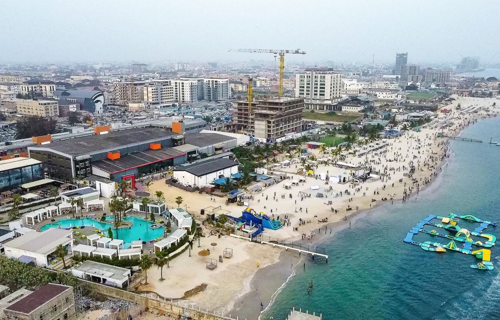
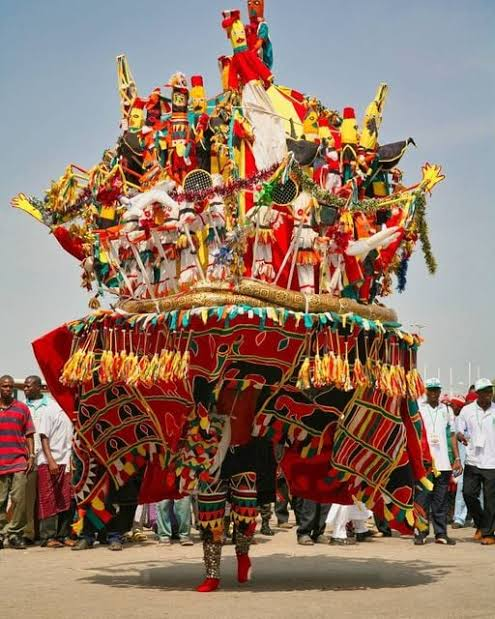

To promote Nigeria as a premier tourist destination, showcasing its rich heritage, natural beauty, and warm hospitality.
To foster sustainable tourism that benefits local communities and preserves Nigeria's cultural and environmental assets.
Nigeria has a long history of tourism built around culture, festivals, historical sites, wildlife, and natural attractions. Over the years, millions of visitors have explored Nigeria's diversity, traditions, and adventure destinations.
Address: Lagos, Nigeria
Phone: +2349151705875
Email: legitdoings@gmail.com
Nigeria Tourism Development Authority
Federal Ministry of Tourism
National Parks Service

